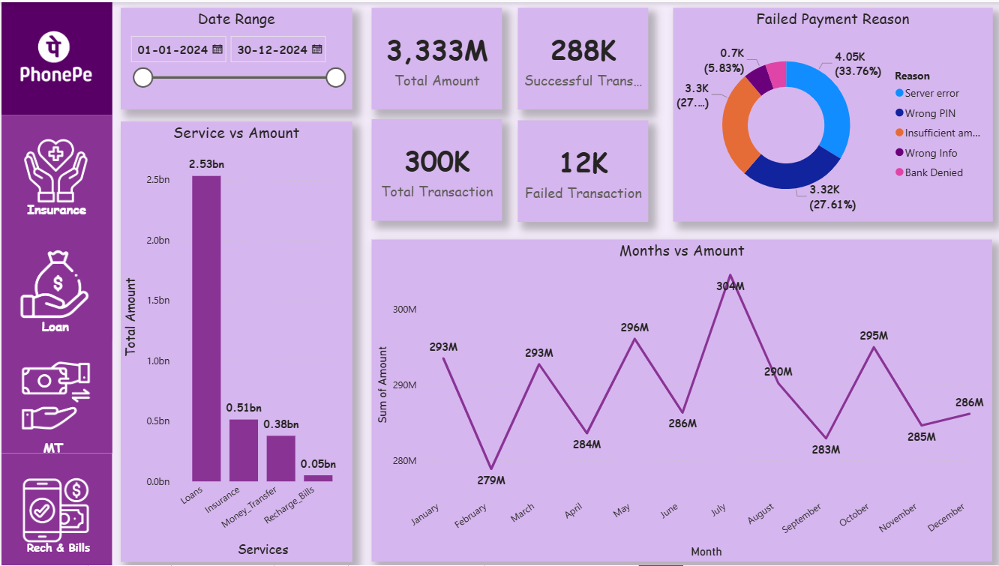
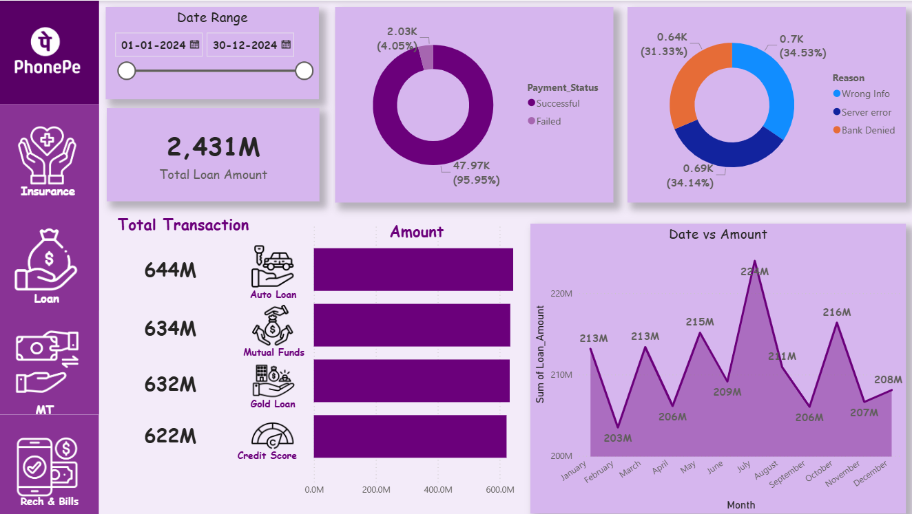
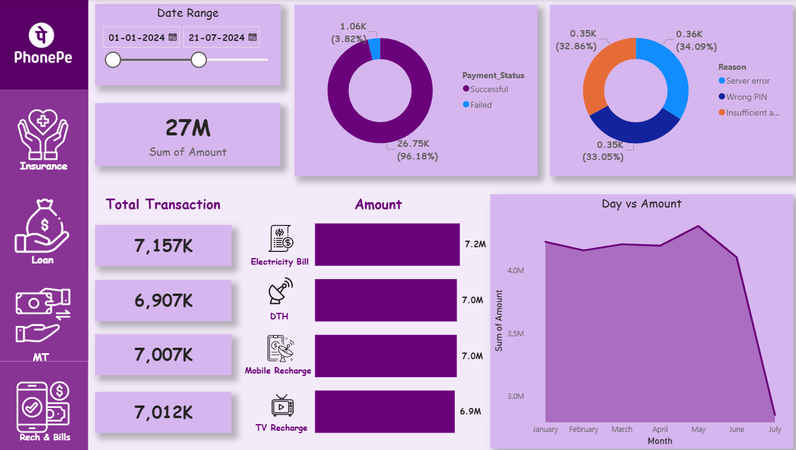

Data Analysis Project by Nityanand Khule
This project analyzes PhonePe UPI transaction data to identify state-wise performance, yearly growth trends, and digital payment adoption patterns. The objective is to extract meaningful business insights and present them through interactive visualizations.
With the rapid growth of UPI transactions in India, businesses need structured insights to understand transaction volume, value distribution, and regional performance. This project focuses on analyzing large-scale transaction data to support data-driven decision-making.
Below are snapshots of the Power BI dashboard and analysis visuals:


